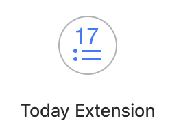
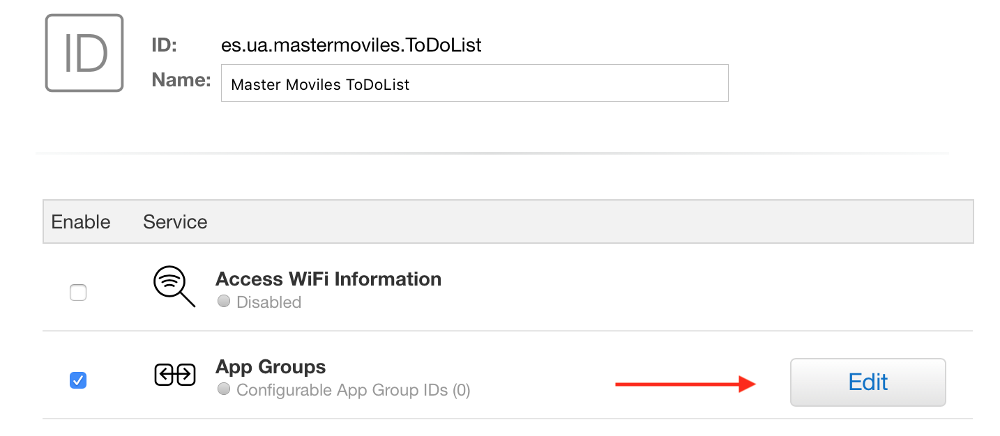
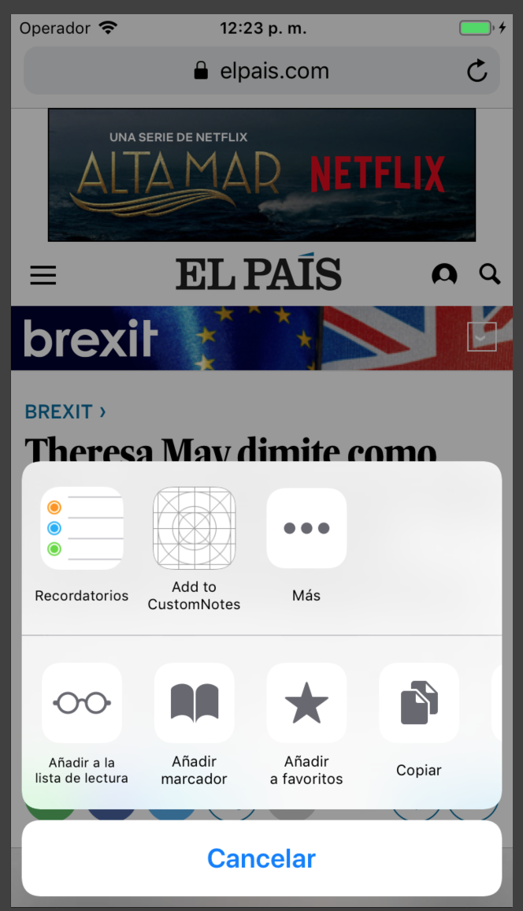

Extensiones¶
Conceptos básicos¶
Introducción¶
Las app extensions representan pequeñas apps o pequeños hilos de ejecución que se instalan en puntos de extensión del sistema y de otras apps.
Se distribuyen e instalan junto con apps normales (la app contenedora de la extensión), no de forma independiente (con la excepción de los teclados configurables). Por ejemplo, Pocket distribuye una extensión para guardar contenido en la app cuando el usuario pulsa el botón de compartir estando en una página web.
Pueden llegar a ser importantes para el usuario final, proporcionando integración entre apps y aumentando la experiencia de usuario.
En nuestras apps podemos también declarar puntos de extensión a los que se conectarán extensiones de terceros (compartir, por ejemplo).
Targets¶
Las extensiones se incluyen en el proyecto como targets adicionales que acompañan a la app principal.
Un target especifica un producto a construir por Xcode. Por ejemplo, si cuando creamos un proyecto escogemos añadir tests unitarios y de UI, Xcode introduce automáticamente estos targets, además de la app principal.
Para añadir manualmente un nuevo target al proyecto podemos
seleccionar el botón + en la parte de abajo o la opción Editor >
Add Target....

Podemos seleccionar el target y especificar sus características en el panel principal. Hay que especificar los mismos elementos que para una app principal (de hecho los targets son como mini apps):
- Bundle Id, versión, build
- Certificado y perfil de aprovisionamiento
- Permisos (capabilities)
- Configuración y reglas del build
Esquema¶
Cada target tiene una configuración automática de construcción definida por su esquema (schema).
Un esquema es una colección de configuraciones que especifican las acciones a realizar para la compilación del target y el entorno ejecutable a usar para lanzar el producto.
Cuando abrimos o creamos un proyecto, Xcode crea automáticamente un esquema para cada target.
El menú de esquemas se puede usar para cambiar el esquema activo y el destino. Podemos usar también el menú de esquemas para crear, editar y gestionar esquemas y para añadir y descartar simuladores.

Los esquemas y los destinos son distintos. Los destinos especifican dónde instalar la app (dispositivos físicos y simuladores).

Los esquemas especifican los ajustes para compilar, ejecutar, testear, monitorizar, analizar y archivar el proyecto. Estos ajustes se pueden configurar en la opción de editar esquema.

Ejemplo de extensión: Compartir¶
Veamos un ejemplo concreto, la extensión Compartir (Share Extension).

Muchas aplicaciones proporcionan el punto de extensión Compartir, en el que se pueden instalar extensiones de tipo Share Extension. Por ejemplo, en la siguiente imagen vemos como se puede acceder a la opción de compartir en una página del navegador Safari y cómo el usuario puede acceder a las extensiones que se han añadido.

La extensión Compartir hereda un ViewController por defecto de tipo
SLComposeServiceViewController
que contiene entre otros:
- Un campo de texto que puede editar el usuario,
- Una previsualización del objeto a compartir
- Los botones
CancelyPost

La extensión puede configurar algunos aspectos de este
ViewController. Por ejemplo, puede añadir una opción en la parte
inferior en la que el usuario pueda seleccionar dónde compartir.
Por ejemplo, esto se hace en la extensión adaptada por la app
Recordatorios, en la que se da la opción de seleccionar el
recordatorio en el que se quiere añadir la página.

SLComposeServiceViewController¶
Cuando creamos una extensión (más adelante haremos una demostración) Xcode crea una plantilla inicial de código.
En el caso de una extensión Compartir la plantilla define un view
controller hijo de SLComposeServiceViewController en el que podemos
configurar el funcionamiento de la extensión.
import UIKit
import Social
class ShareViewController: SLComposeServiceViewController {
override func isContentValid() -> Bool {
// Do validation of contentText and/or NSExtensionContext
// attachments here
return true
}
override func didSelectPost() {
// This is called after the user selects Post. Do the
// upload of contentText and/or NSExtensionContext
// attachments.
// Inform the host that we're done, so it un-blocks its UI.
// Note: Alternatively you could call super's -didSelectPost,
// which will similarly complete the extension context.
self.extensionContext!.completeRequest(returningItems: [],
completionHandler: nil)
}
override func configurationItems() -> [Any]! {
// To add configuration options via table cells at the
// bottom of the sheet, return an array of
// SLComposeSheetConfigurationItem here.
return []
}
}
Extension Context¶
La aplicación que invoca a la extensión crea un objeto de tipo
NSExtensionContext
que se guarda en la variable extensionContext del
SLComposeServiceViewController.
Este objeto contiene la información del ítem o ítems que el usuario a
seleccionado para compartir en su propiedad inputItems:
var inputItems : [Any]
Creación de extensiones dentro de apps¶
Las extensiones se crean en Xcode seleccionando el proyecto y la opción Editor > Add Target...
Hay plantillas para todos los tipos de extensiones que proporcionan un punto de partida a partir del que desarrollar nuestra extensión.

Se construyen de forma independiente¶

Las extensiones se compilan de forma independiente de la app.
Tienen su propio bundle id, capabilities, perfil de aprovisionamiento, etc.
En el caso de la práctica, el bundle id de la extensión será:
es.ua.mastermoviles.ToDoListCloudKit.Hecho.
Para poder depurarlas o que aparezca su salida en el panel de salida estándar de Xcode hay que seleccionarla como producto a lanzar en el simulador.
Demo: Extensión Compartir¶
Vamos a crear una extensión Compartir desde cero.
- Creamos un proyecto nuevo llamado
PruebaExtensiony añadimos un nuevo target. Elegimos el tipo de extensión Share Extension:

- Escribimos como nombre del producto
Compartiry aceptamos activar el esquemaCompartir.

-
Comprobamos los dos productos existentes, el código de cada uno de ellos, y los esquemas.
Añadimos en el storyboard de la app principal una etiqueta que deberá aparecer cuando la app esté lanzada en el simulador.
Añadimos código en el view controller creado por defecto para la extensión en el que imprimimos algunos mensajes en la salida estándar.

- Podemos instalar y depurar la extensión seleccionando el esquema y ejecutándolo. Aparece un panel en el que tenemos que seleccionar la app compañera de la extensión (cualquier extensión debe instalarse junto con una app principal).
Podemos escoger cualquier app de las ya instaladas. Lo más normal es que instalemos primero la app principal y después ejecutemos la extensión usando esta app.
- Cuando se lance la app principal, ya se habrá cargado la extensión. Abrimos Safari, por ejemplo, y escogemos la opción compartir. Comprobamos si la extensión está habilitada.


- Pulsamos la extensión
Compartiry vemos cómo se activa su view controller y como aparecen en la consola los mensajes que hemos añadido en el código.

Tipos de extensiones¶
Puntos de extensión¶
Cada uno de los tipos de extensiones anteriores se conectan con puntos de extensión del sistema.
Cada punto de extensión define una política de uso y proporciona APIs que se usan en las extensiones de ese tipo.
Cada punto de extensión permite una funcionalidad distinta. Cuando diseñemos una extensión hay que identificar qué funcionalidad queremos ofrecer y qué punto de extensión debemos usar.
Se puede consultar la lista completa de puntos de extensión en la documentación de Apple.
Algunos de los tipos de extensiones que proporciona el sistema:
- Actions: Permite manipular contenido de la app original
- Audio Unit: Permite generar o modificar un stream de audio
- Custom Keyboard: Permite reemplazar el teclado del sistema con un teclado customizado
- Document Provider: Permite acceder y gestionar un repositorio de ficheros
- Intents: Manejar tareas relacionadas con la integración con Siri.
- Photo Editing: Permite editar una foto o un vídeo en la app
Fotos - Share: Permite enviar a un sitio web o compartir contenido con otros
- Today: Permite añadir widgets en el panel de Hoy
- WatchKit App: Proporcionar una app o una notificación UI para el Apple Watch.
Xcode permite añadir un target que implementa cualquiera de las extensiones anteriores, creando el código y la configuración inicial de la misma.
Un ejemplo del aspecto de las extensiones Custom Keyboard y Photo Editing:


Propiedades de la extensión¶
Todos los aspectos relacionados con la configuración de la extensión,
incluido su tipo, se definen en propiedades en el fichero
Info.plist.
Por ejemplo, la extensión Share añadida en la demostración se crea con las siguientes propiedades:
<key>NSExtension</key>
<dict>
<key>NSExtensionAttributes</key>
<dict>
<key>NSExtensionActivationRule</key>
<string>TRUEPREDICATE</string>
</dict>
<key>NSExtensionMainStoryboard</key>
<string>MainInterface</string>
<key>NSExtensionPointIdentifier</key>
<string>com.apple.share-services</string>
</dict>
La propiedad NSExtensionPointIdentifier es la que define el tipo de
extensión y el punto de extensión. Como vemos, en el caso de una
extensión de tipo Share es com.apple.share-services.
Panel Today¶
Veamos algunas características de otro tipo de extensión, la Today Extension.

En iOS los usuarios pueden visualizar un panel especial, denominado
Today, en el que es posible instalar extensiones. Se accede a este
panel con un gesto de deslizar hacia la derecha, incluso con el
dispositivo bloqueado.

Las extensiones tienen una pequeña vista que se muestran apiladas una sobre otra. También se puede acceder a una segunda vista ampliada al pulsar Mostrar más.
El usuario puede configurar el orden en que aparecen las extensiones y activarlas o esconderlas.
Notification Service Extension¶
Veamos un último ejemplo de extensión, la Notification Service Extension.

La Notification Service Extension es una extensión que permite modificar el contenido de una notificación remota que llega al dispositivo, antes de ser mostrada.
Hay que seleccionar el tipo en Xcode y se añade un nuevo target a
la aplicación. En este caso Xcode no genera ninguna vista ni
controller, sólo una clase NotificationService que extiende
UNNotificationServiceExtension y que debemos modificar.
import UserNotifications
class NotificationService: UNNotificationServiceExtension {
var contentHandler: ((UNNotificationContent) -> Void)?
var bestAttemptContent: UNMutableNotificationContent?
override func didReceive(_ request: UNNotificationRequest,
withContentHandler contentHandler:
@escaping (UNNotificationContent) -> Void) {
self.contentHandler = contentHandler
bestAttemptContent = (request.content.mutableCopy() as?
UNMutableNotificationContent)
if let bestAttemptContent = bestAttemptContent {
// Modify the notification content here...
bestAttemptContent.title =
"\(bestAttemptContent.title) [modified]"
contentHandler(bestAttemptContent)
}
}
override func serviceExtensionTimeWillExpire() {
// Called just before the extension will be terminated by
// the system.
// Use this as an opportunity to deliver your "best attempt"
// at modified content, otherwise the original push payload
// will be used.
if let contentHandler = contentHandler,
let bestAttemptContent = bestAttemptContent {
contentHandler(bestAttemptContent)
}
}
}
Se debe usar el método
didReceiveNotificationRequest:withContentHandler: para crear un
nuevo objeto UNMutableNotificationContent en el que se pueden
realizar los cambios que se deseen, reemplazando algunos o todos de
los valores originales.
Cuando se haya terminado, se debe llamar al manejador proporcionado pasándole el nuevo objeto. El sistema integra el nuevo contenido en la notificación y la entrega al usuario.
Funcionamiento de una extensión¶
Ciclo de vida de una extension¶

Las app extensión tienen un ciclo de vida muy corto.
Se inicia cuando el usuario la elige de la IU de la app anfitriona. La app anfitriona define el contexto proporcionado a la extensión y comienza el ciclo de vida de la extensión, lanzándole una petición en respuesta a una acción del usuario.
Si la extensión tiene un ViewController, el sistema llama al método
viewDidLoad() para inicializar la vista y permitir que el usuario
interaccione con ella.
La extensión termina tan pronto como completa la petición que ha recibido de la app anfitriona.
Ejemplo: el usuario escribe un texto, lo selecciona y pulsa el botón compartir para enviarlo a una red social.
Comunicación de la app extension¶

Una app extension se comunica principalmente con su app anfitriona (la app desde la que se lanza la extensión).
No hay comunicación directa entre la extensión y la app contenedora. La app contenedora ni siquiera estará ejecutándose cuando la extensión esté corriendo.
El sistema abre la app extension en respuesta a la app anfitriona y la
extensión toma sus datos de un contexto proporcionado por esta
app. Como ya hemos visto, un objeto del tipo NSExtensionContext.
Una extensión de tipo Today (y ninguna otra) puede pedir al sistema
que abra la app contenedora.
Comunicación entre la app y la extensión¶
La extensión y su app contenedora pueden comunicarse a través de datos compartidos en un contenedor compartido. Veamos posibles formas de hacerlo.

La app y la extensión se ejecutan en diferentes procesos y también en diferentes contenedores.
Es posible compartir código usando:
- frameworks embebidos compartidos
- grupos de apps
- a través de una persistencia común, usando CoreData o sqlite
Framework embebido para compartir código¶
Un framework embebido permite compartir código entre la extensión y la app contenedora.
Por ejemplo, si se desarrolla código para realizar un filtro de una foto es conveniente poner el código en un framework y embeber ese framework tanto en la extensión como en su app contenedora.
Para crear un framework embebido se debe seleccionar "Frameworks" como destino en la fase de construcción Copy Files.
Grupos de apps¶
Los grupos de apps permiten que distintas apps y extensiones de un mismo desarrollador puedan acceder a recursos compartidas entre todas ellas, como:
- UserDefaults compartido
- Ficheros compartidos
Un grupo de app se define con un identificador y se crea en el centro de desarrolladores. También lo puede crear automáticamente Xcode en la opción App Groups en las capabilities.
Todas las apps y extensiones deben usar ese mismo identificador de grupo en su App Id (configurado en el centro de desarrolladoras) y en sus capabilities (en Xcode).
Configuración del grupo de apps¶

Hay que crear un grupo de app en el centro de desarrolladores (dando el identificador) e incluir ese grupo en el App Id que usaremos en la app y en la extensión.
Creamos para la práctica el grupo group.ua.mastermoviles.ToDoList
App IDs y perfiles de aprovisionamiento¶


Para la práctica actualizamos los App IDs y los perfiles de
aprovisionamiento, creando el App ID y el perfil Master Moviles
ToDoList Extension y añadiendo el identificador de grupo compartido
entre este App Id y el Master Moviles ToDoList.
App IDs:
Master Moviles ToDoListcon el bundle IDes.ua.mastermoviles.ToDoListToDoList Today Extensioncon el bundle IDes.ua.mastermoviles.ToDoList.Hecho
Perfiles de aprovisionamiento:
Master Moviles ToDoListToDoList Today Extension
Capabilities¶

Tanto en la extensión como en la app hay que activar la capability App Groups y escribir el identificador del grupo que hemos definido.
Compartir datos con UserDefaults¶
La clase UserDefaults define un diccionario compartido en el que se puede guardar valores asociados a claves.
let compartido = UserDefaults(suiteName: "group.app.group.id")
// set valores
compartido?.set(1, forKey: "contador")
compartido?.synchronize()
// get valores
compartido?.synchronize ();
let contador = compartido?.integer(forKey: "contador")
Compartir datos con FileManager¶
La clase
FileManager
contiene el método
containerURL
al que se le debe pasar el identificador del grupo de apps y que
devuelve una URL con la localización del directorio compartido del
grupo en el sistema de ficheros.
Es posible crear ficheros compartidos con todas las apps del grupo en este directorio.
let fileManager = FileManager.default
if let containerURL = fileManager.
containerURL(forSecurityApplicationGroupIdentifier:
"group.com.company.project") {
...
}
Demo: CustomNotes¶
Veamos un ejemplo completo de extensión de tipo Share Extension, la app CustomNotes, adaptada de una versión original hecha con Swift 3 y disponible en github. La aplicación original se describe en este artículo de Medium.
Se ha modificado la app original, simplificándola y adaptándola a Swift 5. La puedes descargar desde este enlace.



Algunas características interesantes:
- Utiliza Core Data para guardar las notas.
- Define un grupo de app compartido entre la extensión y la app en el que se guardan los datos.
- Permite seleccionar la nota en la que se guarda el texto a compartir.
Examinamos cómo funcionan la app y la extensión.